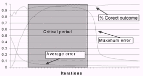
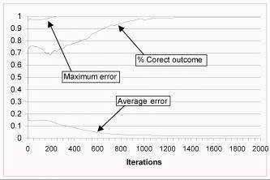
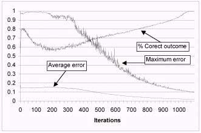

|
Force Learn Algorithm - training neural networks with patterns which have highest errors
|
Author: Velibor Ilić
ABSTRACT: This study describes training methods of the neural nets with the backpropagation algorithm of learning
in which the priority is given to the patterns of the training set with the maximum error during the training.
Date: Mart, 2000
This work was presented on 5th seminar on neural networks (NEUREL)
http://galeb.etf.bg.ac.rs/~NEUREL
Ilić, V. (2000): “Force learn algorithm – training neural networks with patterns which have highest errors”, Seminar on Neural Network Applications in Electrical Engineering “NEUREL 2000”, Belgrade, Sponsored by IEEE Signal Processing Society, IEEE Catalog Number 00EX278, pp 46-48, ISBN 0-7803-5512-1 (Softbounded Edition), ISBN 0-7803-5512-X (Microfishe Edition), Library of Congress: 99-60930,
http://ieeexplore.ieee.org/iel5/7232/19516/00902382.pdf?arnumber=902382
|
Introduction
Force Learn algorithm
Force Learn algorithm and regular method for training
ANN V2.3 – neural network training program
References
Neural net is trained by bringing data from the training set one by one at the input of the net. At the net output
obtained outcome is compared with the expected one, and the central coefficients are corrected for the purpose of the error reducing, the proceeding is repeated until the error for each element from the training set, at the net outlet isn’t smaller than allowed. The common procedure of training means that data from training set are presented in a constant order from the first to the last. [1], [2], [5], [6], [7], [8]
The most common problem that appears during the neural net training is the “uneven training”. The neural net is quickly trained to recognize only some of the training set patterns, while the rest demand larger number of iterations for certain recognition. If some
training set elements achieve almost 100% error, it’s difficult to reduce their errors in further training, even after relatively great number of iterations. The ideal solution would be if the errors were eventually reduced up to the allowed values during training.
Force learn algorithm represents attempt how to overcome the problem of the uneven training. To avoid situation where net is faster taught for some elements then the others, following tactics is used. The net is taught only by input data with the maximum error during
the performed iterations. [4]

Figure 1. Critical period during neural network training
On figure 1 is shown characteristic graph that is given by neural network training. On graph is followed errors (average and maximum) and percent correct outcome. By rectangle is marked critical period during neural network training. This is critical period because there is need for lot of number of iterations to provide maximum error for falling down. In this period maximum error has high value nearly or
even equal 1, and percent of correct outcome is about 95-99% and further grows weakly or it doesn't grow.
Using force learn algorithm this situations can be avoided. Going out from critical period is faster because maximum error falls down much faster then using regular method of training.
The main reason for developing force learn algorithm was to increase probability that neural net could successfully learn the patterns of the training set, but the usage of this algorithm has achieved one very important effect, the reduction of time and iteration number necessary for training the net.
Algorithm consists of:
In one iteration instead of changing weights of connections for all elements of training set:
- first must be determinated value of variable training_limit as a maximum error from the previous iteration decreased for 20%,
- the elements of training set must be taken on input of neural net and error on output for each of this elements must be determinated,
- if error for particular element, that was given on output of neural net, is bigger then value of variable training_limit net has to be trained for particular example several time. In experience it has shown that 3 repeated training gives good results.
In this example neural network is trained to recognize 12 different patterns size 3×3 (figure 3.) in array size 5×5. These patterns can be placed in 9 positions in array (figure 2.). The training set for this net is consisted of 108 elements (the number of positions × the number of shapes) and the exact examples (figure 2 and 3). If there is a shape for which the net is not trained, later, in using the net after a successful training, the results in the interval from (limit error)<x<(1-limit error) will appear at the output.
This example is characteristic because it shows privilege of force learn algorithm. On figure 4 is shown graph of regular method for training neural net. Maximum error has reached value 1 and it keeps on that value. Percent of correct outcome has reached of
99% and it doesn't grow further. On figure 5, there is graph neural net with same configuration but trained with force learn algorithm and with random order of patterns on net input. Maximum error falls much faster despite lot of oscillations.
Neural network configuration:
Three layers neural net with backpropagation algorithm of training:
Number neurons at input layer (number of inputs): (figure 2.) 5×5 = 25
Number neurons at hidden layer: 20
Number neurons at output layer (number of outputs): 12
Learning coefficient (alpha): 0.25
Number of patterns in training set: 12×9 = 108 (Figure 2 and figure 3)
Training set:
a) Inputs:

figure 2. positions of object in array

figure 3. different objects
Network has 25 inputs and each of them can be added to one part of array. On figure 2., there are 9 positions, which can be taken in array by objects from figure 3.
b) output data:
One output of network is added to each of objects from figure that detects him. It means that on output of neural
net appears one 1 and rest values are 0.
Type of processor: Intel Celeron 400
Type of program for training neural net: ANN V2.3
Example 1

Figure 4. Normal order training – maximum and average error and percent of correct outcome
Number of iterations: 10000
Training time: 00:17:47
Average error: 0.01724
Maximum allowed error: 0.1
Maximum error: 1
Net was stopped in training on 10000-th iteration but on graph, on figure 4, there are only 2000 iterations, because the graph is almost same further. In that moment network was trained 99% (1281/1296 correct outputs). On figure 5., there is graph of net that was
trained by using force learn algorithm for more less iterations.
Example 2

Figure 5. Training using Force learn algorithm and random order – maximum and average error and percent of correct outcome
Number of iterations: 1229
Training time: 00:01:55
Average error: 0.01869
Maximum allowed error: 0.1
Maximum error: 0.09535
These graphs prove that maximum error reduces faster by application of force learn algorithm and random training methods, although there is more oscillation during the training.
Relations shown at the graphs 4 and 5 are only valid for this concrete example. If neural nets would be trained by another example, relation between normal order training and force learn method would be different from those shown at the graphs.
Force learn algorithm is practically applied in the program form neural net training (ANN V2.3).
The advantages of Force learn can be practically demonstrated in the example of this program.
ANN program is developed in Delphi 5.0 programming language. Program was being developed by object methodology, and the existing objects (TArray, TNeuron, TNet) can be used for the development of the other applications.
Figures 5 show the neural net training program display. Using this program, obtained results are shown at the graphs by previous graphs.

Figure 5. Neural net training program window
[1] “Frequently asked questions about AI”, http://www.cs.cmu.edu/Web/Groups/AI/html/faqs/ai/ai_general/top.html
[2] “Neural Network Frequently asked questions”,ftp://ftp.sas.com/pub/neural/FAQ.html
[3] Hotomski, P., (1995): “Sistemi Veštačke inteligencije”, Tehnički fakultet “Mihajlo Pupin”, Zrenjanin
[4] Ilić, V., (1999) “Obučavanje neuronskih mreža za prepoznavanje ćiriličnih slova”, magistarski rad, Tehnički Fakultet “Mihajlo Pupin”, Zrenjanin
[5] Jocković, M., Ognjanović Z., Stankovski S. (1997) “Veštačka inteligencija inteligentne mašine i sistemi”, Grafomed, Beograd
[6] Milenković, S., (1997): “Veštačke neuronske mreže”, Zadužbina Andrejević, Beograd
[7] Nikolić, T., Opačić, M., (1995): “Veštačka inteligencija i neuronske mreže”, IBN Centar, Beograd
[8] Sajić, I., (1995): “Neuronske mreže” , časopis “Računari” br 108, BIGZ, Beograd
[9] Subašić, P., (1998): “Fazi logika i neuronske mreže”, Tehnička Knjiga, Beograd
|